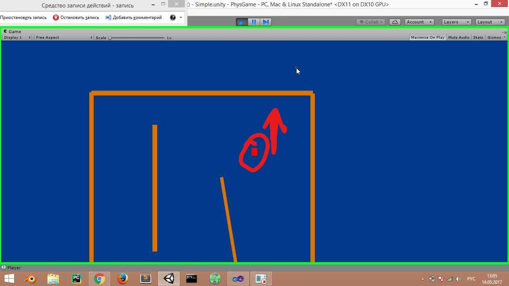
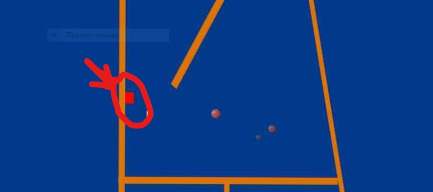

Для передвижения по локации используйте "ASD".Кнопка "Z" изменяет
нашу гравитацию ,тем самым мы летим наверх и цепляемся за поотолок .
Если хотим вернуться исходному положениию ,то нажимаем
опять "Z".При нажатии на стену , ваш объект летит прямо на точку на стене на которую вы указали ,а потом зацепляется за неё. 